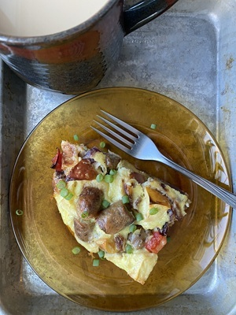
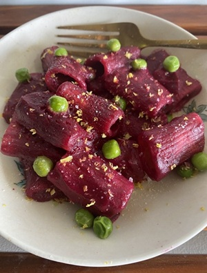

When I'm fainting from hunger, I grab one of your meals and feel your love.
~ Mom
.png "Caring Kitchen Logo")
There’s nothing more caring than sharing a meal with your future-self and loved ones. Caring Kitchen is a virtual space that plans to feed real life ups and downs. The practices here are easily scaled for self-care or to accommodate families, and they make especially thoughtful gifts for Elders.
See the 'How' page for the methods used to feed tomorrow. Check out the 'Why' page to see how cooking like this saves time, money, and health. And click the pictures below for details of the latest and greatest on the menu:


The methods contained in this website have filled freezers with single-serving meals for loved ones. This is what Caring Kitchen means to them:
When I'm fainting from hunger, I grab one of your meals and feel your love.
~ Mom
This is even faster than calling for delivery!
~ Auntie Lola
When I'm too tired to cook, I'm always grateful to my past-self for thinking of me.
~ Me